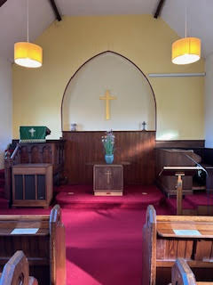

Church Services

The inside of the chapel
Sunday services are at 10.45am at our chapel except for the 1st Sunday of the month when there is a joint service at St John’s Parish Church in Bamford at 11am.
There are also some united services at other chapels in the Peak Circuit.